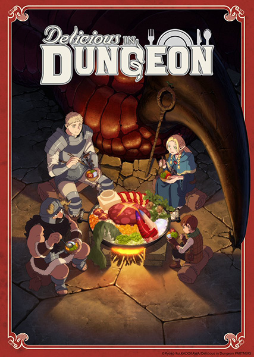

Delicious in Dungeon (also known as Dungeon Meshi) is an anime adaptation of the manga of the same name by Ryoko Kui,
animated by Studio Trigger. Delicious in Dungeon is about an adventuring party that regularly explores a dungeon, and one day they are
fighting a dragon and losing because they have not eaten well recently. One of them, Falin, sacrifices herself to teleport the rest of her party out.
Her brother Laios wants to go back in the dungeon to save her, but only half of the original party (the elf Marcille and the halfling Chilchuck)
decides to go with him. Since they currently lack food and supplies, Laios, having always been interested in monsters and wondering what they taste
like, suggests they hunt and cook monsters along the way to solve their food problem.
I've read the manga since it was serializing, and I enjoyed it a lot. Studio Trigger has also been doing a good job with the anime adaptation.
You can visit the MyAnimeList page to find more information about this show.
The video shown below is the opening theme.